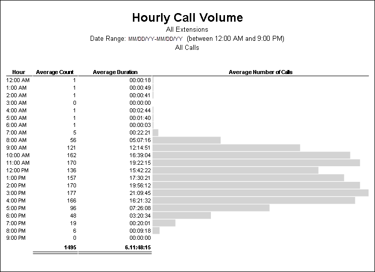
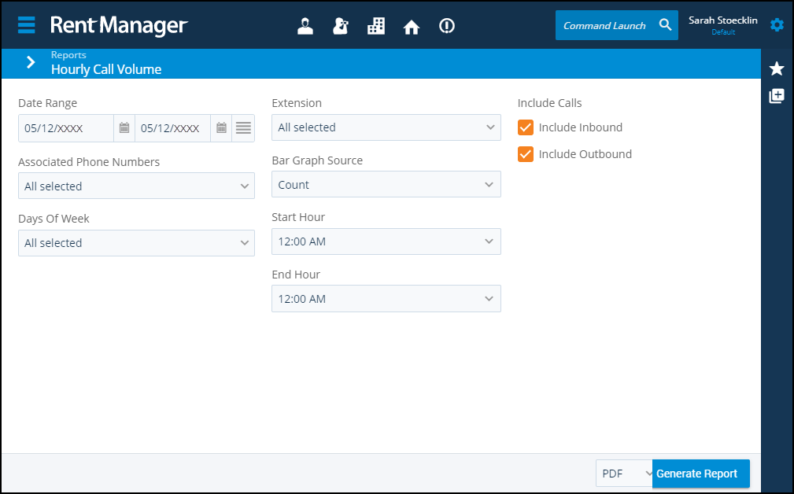

Source: https://rmxhelp.rentmanager.com/Topics/Express/Other/Reports/Hourly-Call-Volume.htm
Hourly Call Volume (Report)
The Hourly Call Volume report displays average hourly rmVoIP activity within the selected date range based on selected criteria including days of the week, hours in the day, and extensions. The average call count and average duration for each hour display alongside a bar graph. The bar graph data displayed in the report is sourced from either the number of calls or call duration for the hour, as selected in the report options.
Related Preferences
This report is available only if you have rmVoIP Enabled in system preferences. For more information, refer to rmVoIP (System Preferences).
Related Privileges
| Group | Privilege | Column |
|---|---|---|
| Letter/Email Templates/Reports/Packets | Run reports | Enabled |
Additionally, on the Reports tab, you must have access to Hourly Call Volume.
For more information, refer to Control User Access.
To view the Hourly Call Volume report, do the following:
-
Go to
 arrow_forward Communication arrow_forward rmVoIP arrow_forward Hourly Call Volume.
arrow_forward Communication arrow_forward rmVoIP arrow_forward Hourly Call Volume.
The Reports: Hourly Call Volume page displays. -
Adjust the report options as desired. Each option is described below.
-
Generate the report in your desired file format(s).

Report Options
The report options described below determine what data displays in the report.

Date Range
Enter or select the date range to determine the data that displays in the report.
In the Date Range section, set the From and To dates for which the report should examine data.
These fields automatically populate with today’s date. Enter a different date or select a date from the calendar. Alternatively, adjust the dates using the available preset buttons or click  to open more options for setting a date range.
to open more options for setting a date range.
Associated Phone Numbers
Check each phone number to be included in the report.
Days of Week
Select each day of the week to include average call volume data for those days in the report.
Extension
Select each internal extension to display calls made to or from the extension(s) during the selected Date Range.
Bar Graph Source
Select which data source the bar graph illustrates.
| Option | Description |
|---|---|
|
Count |
The size of the bar in the graph is determined by the average number of calls. |
|
Duration |
The size of the bar in the graph is determined by the average call length. |
Start Hour
Enter or select the hour to begin evaluating call data. Call data is evaluated starting at this hour, through the End Hour for the Date Range.
End Hour
Enter or select the hour when call data evaluation ends. Call data is evaluated beginning at the Start Hour, through the hour selected here for the Date Range.
Include Calls
Check to Include Inbound calls, Include Outbound calls, or both in the report results.
Report Results
The report results are described below including, if applicable, section, column, and subreport or tab descriptions.
Report Header
The report header displays the report name and key information selected in the report options, such as date information and which properties were examined in the report.
Column Descriptions
The columns that display in the report are described below.
| Column | Description |
|---|---|
|
Hour |
The hour for which average call data displays. |
|
Average Count |
The average number of calls during the hour. If both inbound calls and outbound calls were checked in the Include Calls section, the combined average of both types displays. |
|
Average Duration |
The average length of time of that hour's calls on all selected extensions, in DD:HH:MM:SS (Days:Hours:Minutes:Seconds) format. If each row in the column has less than one full day, then only HH:MM:SS displays. |
|
Average Number of Calls |
This column displays the graphical representation of average call volume, based upon your Count or Duration selection in the Bar Graph Source section. |